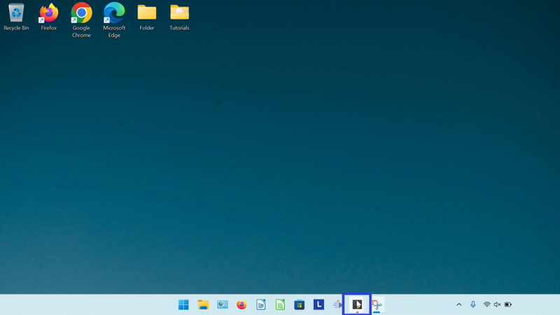
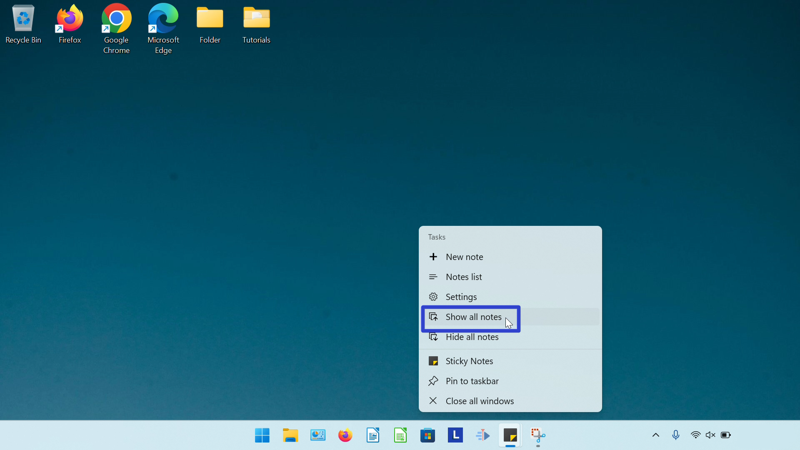
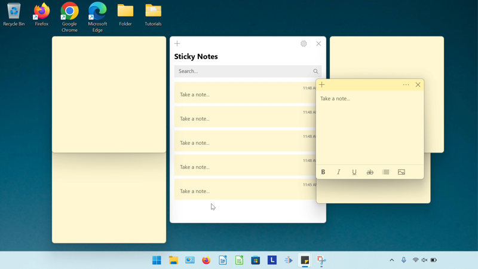
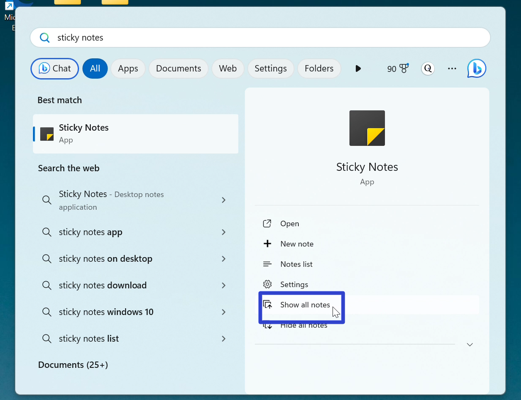

How to Show All Notes in the Microsoft Sticky Notes App (Windows 11)
This tutorial covers:
How to Show All Notes:
No time to scroll down? Click through this tutorial presentation:
Watch a tutorial video:
How to Show All Notes With Right Click
- Step 1: First minimize or hide all notes. Go down to the taskbar and right click the Sticky Notes app icon. 
- Step 2: In the menu that opens, click “Show all notes”. 
- The Notes List and all sticky notes display on the Desktop. 
How to Show All Notes With Start
- Step 1: Minimize or hide all notes. Go down to the taskbar and click the Start (four blue squares) button.

- Step 2: In the Start window that opens, click in the top search bar and type “sticky notes”.

- Step 3: On the search results screen, click “Show all notes”. 
- The Notes List and all sticky notes display on the Desktop.
Save a copy of these instructions with this free PDF tutorial.